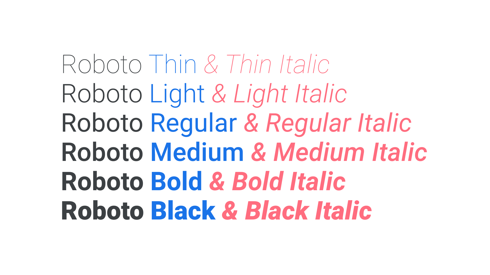

Family, type family, or font family
By Google Fonts Knowledge contributors · Google Fonts Knowledge.
Original article · Source on GitHub · CC BY-SA 4.0. Text, illustrations and existing credits reproduced from the licensed Knowledge repository. Open Shelf adapted the layout and links; these adaptations are also CC BY-SA 4.0. No endorsement implied.
If we consider a typeface to be the core design, then the different weights and styles could be said to be instances of that design, and together they form a family (or type family, or font family).
Although we’re always keen to explain the seemingly subtle difference between a typeface (the thing you see) and a font (the thing you use), “font family” is a valid term because each variation is indeed a font.

Most families include Regular, Italic, Bold, and Bold Italic fonts; however, the most robust families will include weights that vary from the very light (e.g. Hairline) to the very heavy (e.g. Ultra), and everything in between. With variable fonts, the traditional notion of the family becomes less relevant, because those weights and styles are baked right into the core font file itself.
When there are serif and sans serif (or slab serif, or monospaced, etc.) versions of a typeface, they’re often collectively referred to as a superfamily.